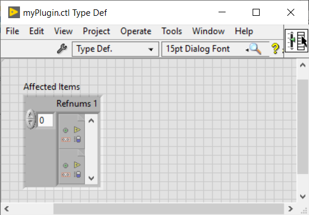
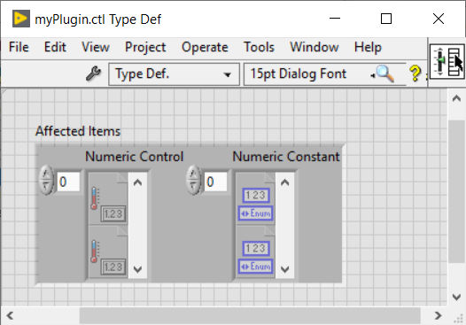

Shortcut Menu Plug-in for LabVIEW IDE
Table of Contents
Overview
LabVIEW 2015 introduced the ability to add custom elements to context menus (the right-click menus) of front-panel and block-diagram objects. This allows you to customize your LabVIEW editor, using G code, to add new menu items, reorganize or replace existing menu items, and manipulate menu items (enable/disable, check/uncheck, ...).
LabVIEW context menus can be accessed from the front-panels and block-diagrams when editing and only from block-diagrams at run time. At runtime, the context menu of the front-panels uses another technology, known as Run-Time Menu, *.rtm files.
How does it work?
At startup, LabVIEW searches for and loads context menu plug-ins from LLB in specific locations.
There are 2 types of plug-ins located in different locations:
- Version-specific plug-in: Used only by a single version of LabVIEW.
- For plug-ins that affect front-panel and block-diagram objects to editing, use the <LabVIEW installation directory>\resource\plugins\PopupMenus\edit time panel and diagram
- For plug-ins that assign block-diagram objects to run time, use the <LabVIEW installation directory>\resource\plugins\PopupMenus\run time
- Version-independent plug-in: Shared across all LabVIEW versions.
- For plug-ins that affect objects from the front-panel and block-diagram to editing, use the <LabVIEW Data>\PopupMenus\edit time panel and diagram
- For plug-ins that assign block-diagram objects to run time, use the <LabVIEW Data>\PopupMenus\run time
If two plug-ins have the same name, LabVIEW will prioritize the plug-in in the <LabVIEW installation directory>\resource\plugins\PopupMenus and will not run the other.
By default, the location of the <LabVIEW installation directory> is:
- Windows: C:\Program Files xx\National Instruments\LabVIEW 20xx\
- On Mac OS: /Applications/National Instruments/LabVIEW 20XX 64-bit/
By default, the location of the <LabVIEW Data> directory is:
- On Windows: C:\Users\Username\Documents\LabVIEW Data
- On Mac OS: /Users/Username/Documents/LabVIEW Data/
The Anatomy of a LabVIEW Shortcut Plug-in
A context menu plug-in must contain 3 main components:
- Affected Items type definition—Specifying the object classes on which the plug-in operates.
- A Builder VI—Add/modify/delete menu items. Called when building the context menu.
- An Execute VI —Running script code to perform plug-in operations. Called when the user selected the plug-in menu.
A context menu plug-in must be saved in an LLB in order to be loaded by LabVIEW at launch. LLBs allow fast loading of the VI hierarchy and easy distribution with a single file. You can place other useful VIs in the LLB or in a subdirectory (they will be ignored by LabVIEW when searching for plug-ins).
Create your own context menu plug-in
How do I get started?
When you create a context menu plugin, you will go through 3 steps:
- Specify the objects affected by the plug-in.
- Determine how custom items will appear in the context menu.
- Change what plug-ins run when the user selects the custom item.
LabVIEW offers a utility to guide us in creating new context menu plug-ins.
Open the VI Create Shortcut Menu Plug-In From Template, located in the <LabVIEW installation directory>\resource\plugins\PopupMenus\ folder, and fill in the various fields and start running the VI.

You must enter the name of your plug-in, specify whether the context menu plug-in assigns context menus to edit or run, and optionally check/uncheck Open plug-in VIs after creation, before running the VI.
This utility generates the LLB, with the 3 main componentsof a Shortcut Menu plug-in, correctly named and in the right location.
Let's use a real-life example to illustrate the process of creating a context menu plug-in in LabVIEW. Let's say we want to implement a context menu plugin, called myPlugIn, that will change the background color of numeric controls and numeric constants.
Affected Items
First of all, we need to specify the objects of the front-panel or block-diagram on which our plug-in will work by modifying the type definition AffectedItems.

This Typedef, containing a cluster of VI Server Refnums arrays, represents the selected objects of the specific types.
You can add an object by adding an array of a refnum type, delete an object by deleting an array, or choose a different object by right clicking an array >> "Select a VI Server Class" and selecting the desired refnum type under the Generic Hierarchy.
To meet our myPlugIn requirements, the affected elements must have 2 arrays, one for digital control objects and one for digital constant objects. Then we have the following Typedef:

Depending on the object types defined in the Assigned Items Typedef, LabVIEW runs a specific set of VIs on a given right-click. In our case, our VI Builder will be called as a result of a right click on the digital controls of the front-panel and on the numerical constants of the block-diagram.
 Remark
Remark
- You can disconnect the "affected items" from the typedef to speed up the loading of the plug-in. The typedef is only there to help you keep this VI and the execution VI using the same type.
- Include only the most specific classes affected by your plugin.
Builder VI
Now we need to tell LabVIEW which items to add, toggle, or remove from the context menu.

In the Builder VI, each menu item is described by:
- Menu Item Display Name: corresponds to the text displayed in the context menu. If it is empty, it adds a separator bar. By default, the display name of the item is the name of the VI Builder (without the file extension). Let's change it to "Change Background Color", which helps the end user to know what action will run when selecting this item.
- Menu Item Tag Suffix_: Is used when you assign multiple menu items in a single plug-in.
- Path To Execution VI: Is the path of the VI that LabVIEW will launch if the end user selects this entry.
- Transaction Control — Instructs LabVIEW whether or not to add an Edit > Cancel option for the operation performed, when the item is selected, in the user's VI.
- Position In Menu — Indicates where (before, instead of, after, in the submenu), relative to the specified menu item tag, you want your item to appear within the menu. By default, the menu item will be just before the "Properties" entry or will be the last menu item if "Properties" does not exist in the menu.
- Checkmark Status: Specifies whether to enable or disable the selected item in the menu.
- Enabled Status: Specifies whether to place a check mark next to the item in the menu.
With the entries of the VI we retrieve information about the selection of the user:
- User VI Ref: Refnum of the VI that the user right clicked.
- Refnum menu: refnum of the context menu of the affected items.
- Affected Items: A list of objects affected by the plug-in, based on the user's selection.
- Remaining Items - List of all other objects in the user's selection.
- Is Multi-select?: Indicates whether the user has selected a single object or multiple objects.
- Mouse Position: Coordinates of where the user clicked.
Based on the information in the user selection, it is possible to implement certain logics to tell LabVIEW which entries to add to the menu.
Back to our example, here are the rules we will follow:
- If it is a single object selection, the menu item will be located after the "Replace" entry.
- If it is a selection of multiple objects, it will be after the "Visible elements" entry.
- If the selection contains control terminals, we do not want to display this entry in the menu.
 Warning
Warning
- Do not change the commands assigned to the terminals of the VI Builder connector. To load and run plug-ins, LabVIEW needs the names, types, and connections to be the same as predefined.
- The name of this VI must match the name of the LLB – only their extensions differ.
- This VI must have debugging disabled, otherwise it will be ignored when the plug-ins load.
- For all menu items, "tag suffix + file name of this VI" must not exceed 240 characters.
Remark
- Make sure the VI Builder is lightweight to avoid context menu loading time.
- If your menu item launches a dialog box, end the item's text with "..."
- All controls in this panel, except for "Affected Items", are locked to prevent accidental changes.
- The Builder VIs remain in memory after the first run, so it is possible to use Global VIs:
- To preserve data between plug-in runs.
- To share data between the build VI and the run VI.
- Since debugging tools (probes, breakpoints, etc.) cannot be used in the VI Builder, prefer the use of functions such as write to log files, one-button dialog box, Debug Write.vim, etc.
VI Execute
Let's move on to the final step and define the actions that LabVIEW will perform when the user selects a custom item from the pop-up menu.

As noted above, LabVIEW loads context menu plug-ins at startup, so it is necessary to restart LabVIEW for the changes to take effect and for your plug-in to appear in the context menu.
Warning
- Be careful when reading the Data Type property: Accessing an object's data types in different application instances can cause problems. If you need to read a data type, do so in the application instance of the owner VI or use the Request a de-allocation function.
Remark
- Make sure the builder VI is lightweight to avoid too long a context menu load time.
- All controls in this panel, except for "Affected Items", are locked to prevent accidental changes.
- Debugging tools can be used in the RUN VI.
- Plug-ins can be reloaded without restarting LabVIEW by calling the Menus:Refresh method. You can use the VI: < LabVIEW Installation Directory>\resource\plugins\PopupMenus\support\Refresh Menus.vi that calls this method.